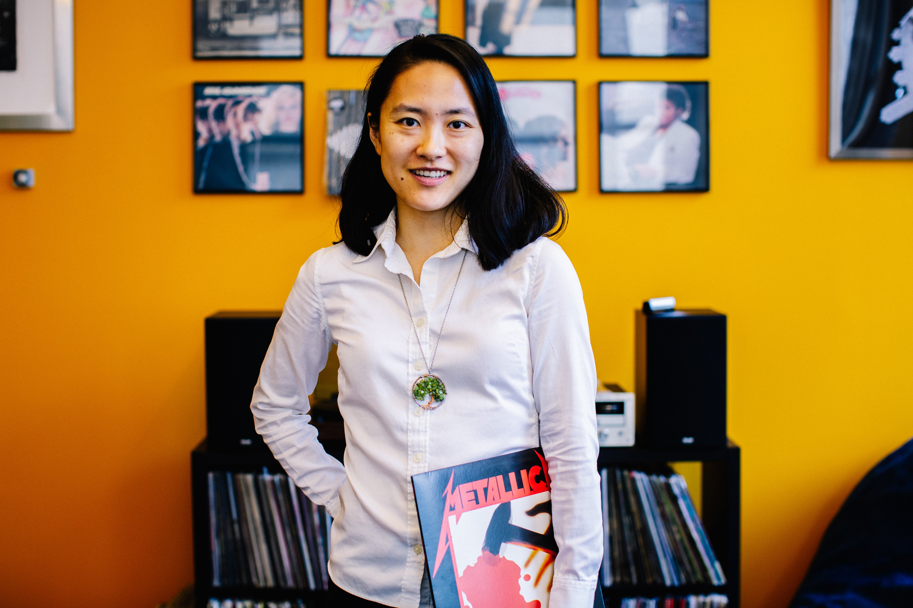

Jen:
Weapon of Choice
by Fatboy Slim
Erik:
Pick Me Up
by Perfume
Tracy:
Stomp
by Kirk Franklin
Mimi Li
senior editor
Go to Mimi’s pick


Bluey, a show about a Blue Heeler pup and her family, is one of those rare gems that parents will actually want to watch with their kids. The Australian accents and somewhat quick pacing mean that this show mostly goes over my three-year-old’s head, but that doesn’t stop me from pushing it every chance I get. This adorable family makes me want to do more adorable things with my family and just generally be a better parent—making it a great, inspirational watch for a new year, if you’re into that kind of thing.
Annie Mullowney
senior editor
Go to Annie’s pick
Mary Reddy
senior adviser
Go to Mary’s pick

Almost all the characters on the show The White Lotus fall somewhere on the spectrum from inconsiderate to unthinkingly cruel. That said, the mechanics of their flawed thought processes are pretty clear to see, so bingeing all six hours of this show may actually help you become a more thoughtful, kinder person. No resolutions required.
Annie:
March March
by The Chicks

I swore off New Year’s resolutions years ago, but at the start of the year, I still like to foster a sense of renewal and usually find myself contemplating how I’m measuring up against the person I want to be. Below, we have a few picks along these lines, including a heartwarming animated show I actually like to watch with my preschooler and a new newsletter from The Washington Post aimed at improving our ability to interpret data and read charts.

The music that motivates us
Throughout the COVID-19 pandemic, we’ve all had to consider a great deal of data, hoping to assess our individual risks as well as our progress, whether nationally or globally, toward containment of the virus. In the rush to make headlines, reporters have often confused us or misrepresented conclusions to be drawn from the data. Let's resolve to become more data literate in 2022. To that end, I recommend Philip Bump’s newsletter called How to Read This Chart, which launched at the end of December 2021 from The Washington Post.
Morgan Strunsky
senior
editorial associate
Go to Morgan’s pick

Despite being about sixteen years late to the party, I recently discovered the album Marvin's Marvelous Mechanical Museum, which was released in 2005 by the band Tally Hall (which has been defunct since 2011). Categorized by the band as “wonky rock” or “fabloo,” the album, which is admittedly odd at times, is catchy from start to finish and certainly warrants repeat listens.